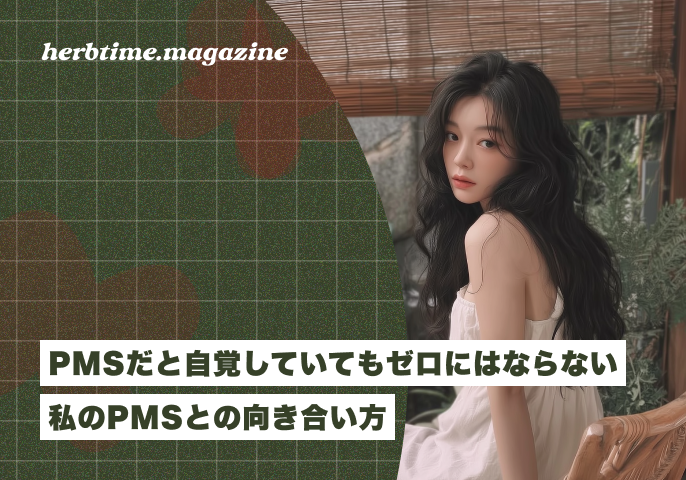

生理前？って友達に聞かれるようになった
――自分がPMSかもしれないと気づいたのはいつですか
大学生の時です。ちょうどコロナと、大学の編入、一人暮らしをはじめたタイミングが被ってしまい、メンタルが安定してなかった時期でもあると思います。
親友と電話でよく話してたんですけど、病んでる時期になると「いま、生理前？」って聞かれるようになりました。その親友以外の友達にも同じことを聞かれたり、家族も気づいてたと思います。
生理前になると、気分が沈んだり、些細なことでイライラしたり、自分でもコントロールできないと感じたことはありますか？
PMS（月経前症候群）は、対策をしていても完全になくなるわけではなく、感情の揺れや人間関係、仕事にも影響することがあります。
今回は、PMSと向き合いながら生活している23歳のSawaさんに、リアルな経験を聞きました。

Sawaさんについて
大学時代にPMSに気づき、それ以来、感情の揺れや人間関係への影響と向き合ってきた。
現在は自分なりに対策を取りながら過ごしているものの、完全になくなるわけではなく、仕事やパートナーとの関係の中で、どう向き合うかを今も模索している。
大学生の時です。ちょうどコロナと、大学の編入、一人暮らしをはじめたタイミングが被ってしまい、メンタルが安定してなかった時期でもあると思います。
親友と電話でよく話してたんですけど、病んでる時期になると「いま、生理前？」って聞かれるようになりました。その親友以外の友達にも同じことを聞かれたり、家族も気づいてたと思います。